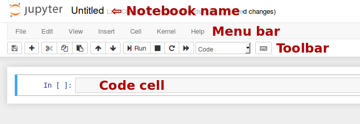

The Jupyter Notebook¶
Introduction¶
The notebook extends the console-based approach to interactive computing in a qualitatively new direction, providing a web-based application suitable for capturing the whole computation process: developing, documenting, and executing code, as well as communicating the results. The Jupyter notebook combines two components:
A web application: a browser-based tool for interactive authoring of documents which combine explanatory text, mathematics, computations and their rich media output.
Notebook documents: a representation of all content visible in the web application, including inputs and outputs of the computations, explanatory text, mathematics, images, and rich media representations of objects.
더 보기
See the installation guide on how to install the notebook and its dependencies.
Main features of the web application¶
- In-browser editing for code, with automatic syntax highlighting, indentation, and tab completion/introspection.
- The ability to execute code from the browser, with the results of computations attached to the code which generated them.
- Displaying the result of computation using rich media representations, such as HTML, LaTeX, PNG, SVG, etc. For example, publication-quality figures rendered by the matplotlib library, can be included inline.
- In-browser editing for rich text using the Markdown markup language, which can provide commentary for the code, is not limited to plain text.
- The ability to easily include mathematical notation within markdown cells using LaTeX, and rendered natively by MathJax.
Notebook documents¶
Notebook documents contains the inputs and outputs of a interactive session as
well as additional text that accompanies the code but is not meant for
execution. In this way, notebook files can serve as a complete computational
record of a session, interleaving executable code with explanatory text,
mathematics, and rich representations of resulting objects. These documents
are internally JSON files and are saved with the .ipynb extension. Since
JSON is a plain text format, they can be version-controlled and shared with
colleagues.
Notebooks may be exported to a range of static formats, including HTML (for example, for blog posts), reStructuredText, LaTeX, PDF, and slide shows, via the nbconvert command.
Furthermore, any .ipynb notebook document available from a public
URL can be shared via the Jupyter Notebook Viewer (nbviewer).
This service loads the notebook document from the URL and renders it as a
static web page. The results may thus be shared with a colleague, or as a
public blog post, without other users needing to install the Jupyter notebook
themselves. In effect, nbviewer is simply nbconvert as
a web service, so you can do your own static conversions with nbconvert,
without relying on nbviewer.
Notebooks and privacy¶
Because you use Jupyter in a web browser, some people are understandably
concerned about using it with sensitive data.
However, if you followed the standard
install instructions,
Jupyter is actually running on your own computer.
If the URL in the address bar starts with http://localhost: or
http://127.0.0.1:, it's your computer acting as the server.
Jupyter doesn't send your data anywhere else—and as it's open source,
other people can check that we're being honest about this.
You can also use Jupyter remotely: your company or university might run the server for you, for instance. If you want to work with sensitive data in those cases, talk to your IT or data protection staff about it.
We aim to ensure that other pages in your browser or other users on the same computer can't access your notebook server. See Security in the Jupyter notebook server for more about this.
Starting the notebook server¶
You can start running a notebook server from the command line using the following command:
jupyter notebook
This will print some information about the notebook server in your console,
and open a web browser to the URL of the web application (by default,
http://127.0.0.1:8888).
The landing page of the Jupyter notebook web application, the dashboard, shows the notebooks currently available in the notebook directory (by default, the directory from which the notebook server was started).
You can create new notebooks from the dashboard with the New Notebook
button, or open existing ones by clicking on their name. You can also drag
and drop .ipynb notebooks and standard .py Python source code files
into the notebook list area.
When starting a notebook server from the command line, you can also open a
particular notebook directly, bypassing the dashboard, with jupyter notebook
my_notebook.ipynb. The .ipynb extension is assumed if no extension is
given.
When you are inside an open notebook, the File | Open... menu option will open the dashboard in a new browser tab, to allow you to open another notebook from the notebook directory or to create a new notebook.
주석
You can start more than one notebook server at the same time, if you want
to work on notebooks in different directories. By default the first
notebook server starts on port 8888, and later notebook servers search for
ports near that one. You can also manually specify the port with the
--port option.
Creating a new notebook document¶
A new notebook may be created at any time, either from the dashboard, or using the menu option from within an active notebook. The new notebook is created within the same directory and will open in a new browser tab. It will also be reflected as a new entry in the notebook list on the dashboard.

Opening notebooks¶
An open notebook has exactly one interactive session connected to a
kernel, which will execute code sent by the user
and communicate back results. This kernel remains active if the web browser
window is closed, and reopening the same notebook from the dashboard will
reconnect the web application to the same kernel. In the dashboard, notebooks
with an active kernel have a Shutdown button next to them, whereas
notebooks without an active kernel have a Delete button in its place.
Other clients may connect to the same kernel. When each kernel is started, the notebook server prints to the terminal a message like this:
[NotebookApp] Kernel started: 87f7d2c0-13e3-43df-8bb8-1bd37aaf3373
This long string is the kernel's ID which is sufficient for getting the
information necessary to connect to the kernel. If the notebook uses the IPython
kernel, you can also see this
connection data by running the %connect_info magic, which will print the same ID information along with other
details.
You can then, for example, manually start a Qt console connected to the same kernel from the command line, by passing a portion of the ID:
$ jupyter qtconsole --existing 87f7d2c0
Without an ID, --existing will connect to the most recently
started kernel.
With the IPython kernel, you can also run the %qtconsole
magic in the notebook to open a Qt console connected
to the same kernel.
Notebook user interface¶
When you create a new notebook document, you will be presented with the notebook name, a menu bar, a toolbar and an empty code cell.
Notebook name: The name displayed at the top of the page,
next to the Jupyter logo, reflects the name of the .ipynb file.
Clicking on the notebook name brings up a dialog which allows you to rename it.
Thus, renaming a notebook
from "Untitled0" to "My first notebook" in the browser, renames the
Untitled0.ipynb file to My first notebook.ipynb.
Menu bar: The menu bar presents different options that may be used to manipulate the way the notebook functions.
Toolbar: The tool bar gives a quick way of performing the most-used operations within the notebook, by clicking on an icon.
Code cell: the default type of cell; read on for an explanation of cells.
Structure of a notebook document¶
The notebook consists of a sequence of cells. A cell is a multiline text input field, and its contents can be executed by using Shift-Enter, or by clicking either the "Play" button the toolbar, or Cell, Run in the menu bar. The execution behavior of a cell is determined by the cell's type. There are three types of cells: code cells, markdown cells, and raw cells. Every cell starts off being a code cell, but its type can be changed by using a drop-down on the toolbar (which will be "Code", initially), or via keyboard shortcuts.
For more information on the different things you can do in a notebook, see the collection of examples.
Code cells¶
A code cell allows you to edit and write new code, with full syntax highlighting and tab completion. The programming language you use depends on the kernel, and the default kernel (IPython) runs Python code.
When a code cell is executed, code that it contains is sent to the kernel
associated with the notebook. The results that are returned from this
computation are then displayed in the notebook as the cell's output. The
output is not limited to text, with many other possible forms of output are
also possible, including matplotlib figures and HTML tables (as used, for
example, in the pandas data analysis package). This is known as IPython's
rich display capability.
더 보기
Rich Output example notebook
Markdown cells¶
You can document the computational process in a literate way, alternating descriptive text with code, using rich text. In IPython this is accomplished by marking up text with the Markdown language. The corresponding cells are called Markdown cells. The Markdown language provides a simple way to perform this text markup, that is, to specify which parts of the text should be emphasized (italics), bold, form lists, etc.
If you want to provide structure for your document, you can use markdown
headings. Markdown headings consist of 1 to 6 hash # signs # followed by a
space and the title of your section. The markdown heading will be converted
to a clickable link for a section of the notebook. It is also used as a hint
when exporting to other document formats, like PDF.
When a Markdown cell is executed, the Markdown code is converted into the corresponding formatted rich text. Markdown allows arbitrary HTML code for formatting.
Within Markdown cells, you can also include mathematics in a straightforward
way, using standard LaTeX notation: $...$ for inline mathematics and
$$...$$ for displayed mathematics. When the Markdown cell is executed,
the LaTeX portions are automatically rendered in the HTML output as equations
with high quality typography. This is made possible by MathJax, which
supports a large subset of LaTeX functionality
Standard mathematics environments defined by LaTeX and AMS-LaTeX (the
amsmath package) also work, such as
\begin{equation}...\end{equation}, and \begin{align}...\end{align}.
New LaTeX macros may be defined using standard methods,
such as \newcommand, by placing them anywhere between math delimiters in
a Markdown cell. These definitions are then available throughout the rest of
the IPython session.
더 보기
Working with Markdown Cells example notebook
Raw cells¶
Raw cells provide a place in which you can write output directly. Raw cells are not evaluated by the notebook. When passed through nbconvert, raw cells arrive in the destination format unmodified. For example, you can type full LaTeX into a raw cell, which will only be rendered by LaTeX after conversion by nbconvert.
Basic workflow¶
The normal workflow in a notebook is, then, quite similar to a standard
IPython session, with the difference that you can edit cells in-place multiple
times until you obtain the desired results, rather than having to
rerun separate scripts with the %run magic command.
Typically, you will work on a computational problem in pieces, organizing related ideas into cells and moving forward once previous parts work correctly. This is much more convenient for interactive exploration than breaking up a computation into scripts that must be executed together, as was previously necessary, especially if parts of them take a long time to run.
To interrupt a calculation which is taking too long, use the Kernel, Interrupt menu option, or the i,i keyboard shortcut. Similarly, to restart the whole computational process, use the Kernel, Restart menu option or 0,0 shortcut.
A notebook may be downloaded as a .ipynb file or converted to a number of
other formats using the menu option File, Download as.
Keyboard shortcuts¶
All actions in the notebook can be performed with the mouse, but keyboard shortcuts are also available for the most common ones. The essential shortcuts to remember are the following:
- Shift-Enter: run cell
- Execute the current cell, show any output, and jump to the next cell below. If Shift-Enter is invoked on the last cell, it makes a new cell below. This is equivalent to clicking the Cell, Run menu item, or the Play button in the toolbar.
- Esc: Command mode
- In command mode, you can navigate around the notebook using keyboard shortcuts.
- Enter: Edit mode
- In edit mode, you can edit text in cells.
For the full list of available shortcuts, click Help, Keyboard Shortcuts in the notebook menus.
Plotting¶
One major feature of the Jupyter notebook is the ability to display plots that are the output of running code cells. The IPython kernel is designed to work seamlessly with the matplotlib plotting library to provide this functionality. Specific plotting library integration is a feature of the kernel.
Installing kernels¶
For information on how to install a Python kernel, refer to the IPython install page.
The Jupyter wiki has a long list of Kernels for other languages. They usually come with instructions on how to make the kernel available in the notebook.
Trusting Notebooks¶
To prevent untrusted code from executing on users' behalf when notebooks open, we store a signature of each trusted notebook. The notebook server verifies this signature when a notebook is opened. If no matching signature is found, Javascript and HTML output will not be displayed until they are regenerated by re-executing the cells.
Any notebook that you have fully executed yourself will be considered trusted, and its HTML and Javascript output will be displayed on load.
If you need to see HTML or Javascript output without re-executing, and you are sure the notebook is not malicious, you can tell Jupyter to trust it at the command-line with:
$ jupyter trust mynotebook.ipynb
See Security in notebook documents for more details about the trust mechanism.
Browser Compatibility¶
The Jupyter Notebook aims to support the latest versions of these browsers:
- Chrome
- Safari
- Firefox
Up to date versions of Opera and Edge may also work, but if they don't, please use one of the supported browsers.
Using Safari with HTTPS and an untrusted certificate is known to not work (websockets will fail).